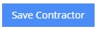
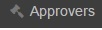

Setting up data maintenance
Online Material Withdrawal System by Philsaga Mining Corporation
There are different prerequisites that are needed to be setup before a particular transaction can be made. These prerequisites are needed to be able to be part of the choices inside OMWS when doing transactions. These are as follows:
- Click
 main menu from the sidebar.
main menu from the sidebar.
Contractors
- Click or click to setup the contractor and its details.
- You will be redirected to a page where contractors defined inside OMWS are listed.
- You may do searching of the existing contractor by putting the keyword on a text box provided and click .
- You may also add or define a new contractor by clicking .
- Input all relevant data.
- Click .
- To verify that the newly added contractor is already part of the system you may see the populated records listed below of the same window page or you may do searching.
- After which you may assign the newly added contractor to specific location given that location is already defined.
- You may also want to keep the list of contractors by clicking .
- Click or click to setup the location and its details.

- You will be redirected to a page where locations defined inside OMWS are listed.
- You may do searching of the existing locations by putting the keyword on a text box provided and click .
- You may also add or define a new location by clicking .
- Input all relevant data.
- Click .
- To verify that the newly added location is already part of the system you may see the populated records listed below of the same window page or you may do searching.
- After which you may assign the newly added location to specific cost code given that cost code is already defined.
- Once a location has been defined along with cost codes you may click .
- You may keep a list fo locations by clicking .
Receivers
- Click or click to setup the receiver and its details.
- You will be redirected to a page where receviers defined inside OMWS are listed.
- You may do searching of the existing receiver by putting the keyword on a text box provided and click .
- You may also add or define a new receiver by clicking .
- Input all relevant data.
- Click .
- To verify that the newly added receiver is already part of the system you may see the populated records listed below of the same window page or you may do searching.
- Once a recevier is no longer part of the system you may click so to avoid unnecessary receiving transactions. This also serves as a control of unwanted and illegal transactions.
- You may keep a list of receivesr by clicking and you may opt to choose which record you may wanted to keep for historical and reporting purposes.
Approvers
- Click  or click to setup the approver and its details.
- You will be redirected to a page where approvers defined inside OMWS are listed.
- You may do searching of the existing approver by putting the keyword on a text box provided and click .
- You may also add or define a new approver by clicking .
- Input all relevant data.
- Click .
- To verify that the newly added approver is already part of the system you may see the populated records listed below of the same window page or you may do searching.
- Once an approver is no longer part of the system you may click so to avoid unnecessary approval of transactions. This also serves as a control of unwanted and illegal transactions. You may also want to an approving personnel who has been deactivated for some reason but you must seek approval first from top management.
- You may keep a list of approvers by clicking and you may opt to choose which record you may wanted to keep for historical and reporting purposes.
- Click or click
 to setup the cost codes and its details.
to setup the cost codes and its details.

- You will be redirected to a page where cost codes defined inside OMWS are listed.
- You may do searching of the existing cost codes by putting the keyword on a text box provided and click .
- You may also add or define a new cost code by clicking .
- Input all relevant data.
- Click .
- To verify that the newly added cost code is already part of the system you may see the populated records listed below of the same window page or you may do searching.
- Once a cost code is no longer part of the system you may click . Note: Unlike other deactivation this part of the OWMS has no activation counterpart. Be cautious when deactivating a cost code. You must seek approval first from top management in order to deactivate a cost code.
Cut-Off
- Click or click to setup the cut-off and its details.
- You will be redirected to a page where cut-off defined inside OMWS are listed.
- You may also add or define a new cut-off dates by clicking .
- You may define the date of the cut-off by clicking the calendar button.

- Click . Please refer to cut-off documentation on Menu Icon.
- Click to setup the category and its details.
- You will be redirected to a page where category defined inside OMWS are listed.
- You may also add or define a new category by clicking .
- Input all relevant data.
- Click .
- To verify that the newly added category is already part of the system you may see the populated records listed below of the same window page.
Created with the Personal Edition of HelpNDoc: Free EPub and documentation generator